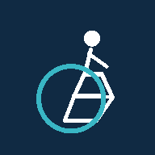

ACCESSAI
Acceso móvil
PROTOTIPO DE VISIÓN ARTIFICIAL
Conecta con tu servidor
Introduce la dirección HTTPS donde está disponible la app Streamlit. El modelo y las imágenes se procesan en ese servidor.
Para instalar la PWA, sirve esta carpeta desde HTTPS. localhost funciona para desarrollo en este mismo equipo.
Abrir Streamlit en una pestaña completa